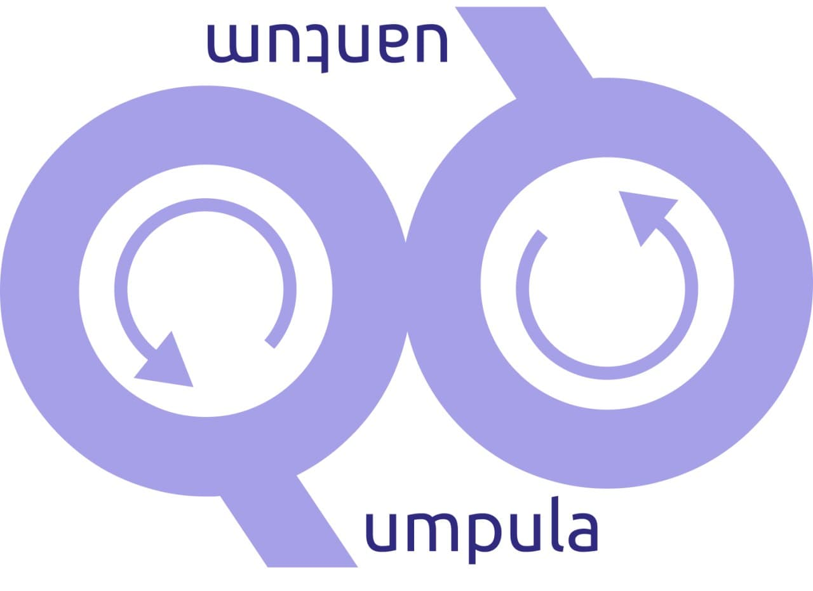

Quantum Annealing with examples
Created by Valter Uotila
Unified Database Management Systems
Problem: modern database management systems do not have a solid theoretical foundation.
Oracle started promoting category theory as a theoretical foundation for various database concepts.
Category theory is very applicable: we published some results in VLDB'21 and its workshops.
Applied category theory for multi-model databases
Motivation
Quantum computing does not yet outperform classical computers in real-life applications but...
...it might be more sustainabile to operate and ...
... we can avoid making the same ethical mistakes when developing quantum computing frameworks. For example, see Gender BIAS in AI: Perspectives of AI Practitioners.
Quantum Annealing
Implementation by

Performance study in Nature: Quantum annealing with manufactured spins
Motivation for quantum annealing
D-wave has many examples of use cases:
General idea
Goal: finding the global minimum of a given objective function
Simulated annealing on classical hardware
Annealing process

Studies about performance of quantum annealing
Google studied that quantum annealing outperforms simulated annealing
General study: Performance of quantum annealing hardware
Important paper
Ising formulations of many NP problems
by Andrew Lucas
Example: Steiner trees and objective function
Relationship to gate-model
Compared to other paradigms
Quantum computing companies with different paradigms and hardware
- IQM (gate)
- IBM (gate, superconductor)
- Google (gate, superconductor)
- IonQ (gate, trapped ion)
- Honeywell (gate, trapped ion)
- Rigetti (gate, integrated)
- Microsoft (gate, topological)
- Xanadu (gate, photonic)
- D-wave (annealing & gate coming)
Demonstration:
Sudoku
BMW quantum computing challenge:
Sensor positions optimization
Problem
Cars, especially self-driving cars, require multiple sensors to monitor the car's environment. Positioning the sensors is combinatorically difficult problem and testing different combinations is slow.
In this challenge BMW wanted to research possibilities of quantum computing in the sensor positioning process.
New Angles from Right Range:
Optimizing Car Sensor Positioning with D-Wave Hybrid Quantum Computers
Core idea of solution
We utilized Quadratic Unconstrained Binary Optimization model and followed the standard approach in D-wave's examples and in the paper Ising formulations of many NP problems.
Core idea of solution
- Formalizing problem
- Defining suitable binary variables
- Identifying and creating suitable constraints
- Implementing variables and constraints
Future work
Quantum computing for databases
Overall two-level picture
"Easy" level
Solving classical database optimization and modeling problems with quantum computing
- Join order optimization
- Estimating result size of conjunctive queries
- Scheduling and deadlock recovery
- Junction'21 idea: sustainability in data infrastructures
- Database query langugages: pregroup grammars
Problem: quantum computing might not bring any benefits
Join order optimization
Problem: select a subset of vertices and edges so that they form a tree and the total weight is minimized.
"Hard" level
Will we be able to store and query quantum data from quantum databases?
What does it mean?
How would it work?
Why do we need it?
Category theory & quantum computing:
Conclusion
- There are already many real-life applications of quantum annealing
- Quantum annealing should be applicable to database problems
- Ising formulations of many NP problems is a concrete paper of formulating problems using Ising model
Thank you for your interest and opportunity to give a presentation!
Questions, comments, dicussion?
This presentation is created using
The HTML Presentation Framework
Created by Hakim El Hattab and contributors